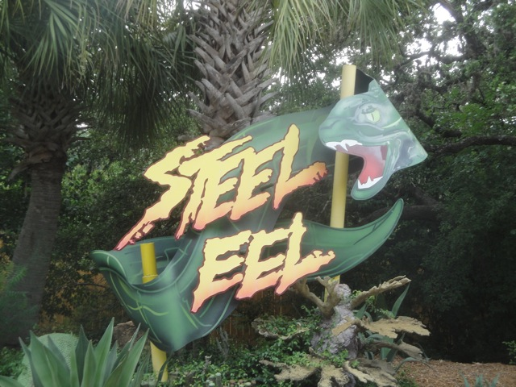
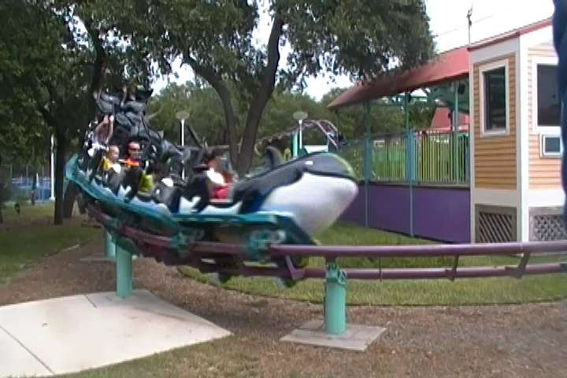
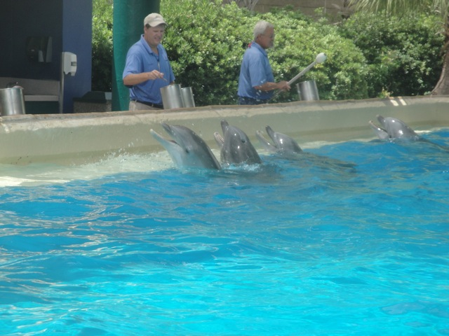

| |
Sea World San Antonio Review

Sea World San Antonio is a very interesting park. It is one of the Sea World parks, though it has by far less animals than it's sister San Diego park (I assume it has less than Orlando as well, but I still have yet to go there). But it's still a really fun park. Oh, and don't think that it having less animals will spare it from the PETA/Blackfish psychopaths. You can't reason with those lunatics. But enough about them, let's keep talking about Sea World San Antonio. It may not be as big on the animals as San Diego and Orlando, but it still has plenty at the park. You can definetly learn all about whales, dolphins, and all sorts of other marine life at Sea World San Antonio at the park. But on top of that, it has some really good roller coasters. Great White, which is a Batman clone and a lot of fun. And Steel Eel is certainly an intersting Morgan Hyper that you can read much more about in my review of it down below. So yeah. Definitely check out Sea World San Antonio if you want to learn more about marine animals and ride some really cool rides, and definetly make sure to read down below for just more details on this awesome park.
Rollercoasters
There is a link to a review of all the Rollercoasters at Sea World San Antonio.
Please keep in mind that there is no review of Wake Breaker or Texas Stingray because neither of them existed when I last visited.
Top Coasters
Great White Review

Steel Eel Review

Kiddy Coasters
Super Grovers Box Car Derby Review

Flat Rides
All right. Here are all of the flat rides that are found at Sea World San Antonio. And man, there are not many flat rides here. At all. Seriously, the only flat rides I can think of at the park are some kiddy flat rides. Yeah, the Sea World parks have never been big on flat rides. They pretty much don't exist.
Water Rides
Now Sea World San Antonio does have a couple water rides. Now let's first start off with the one that I rode. Journey to Atlantis. Now let me get this straight. This is NOT a credit. NOT A CREDIT!!! IT DOES NOT COUNT!!! I know some count it, and the San Diego one *barely* counts as a credit. But this one...No. This water coaster is not elaborate enough to count as a credit. Seriously. Counting this because of it's uphill section is like counting Splash Mountain as a credit (Apparently some people actually count Splash Mtn. SMH). Now I did have fun on Journey to Atlantis. It is a fun ride, though I will admit that it's all kind of awkward and clumsy. Like the little coaster portions that some claim are enough to count it as a credit (It's not enough), it just feels kind of forced. Like they just slapped it on at the last minute to give it some spice that doesn't fit in with the ride. I mean, there's other similar shoot the chute rides that aren't credits, but don't feel quite as clumsy that I've ridden. But hey. It will cool you off in the hot Texas heat. They also have a rapids ride. I didn't ride it. But from photos, it does look fun. And I do love Shipwreck Rapids at Sea World San Diego. So I have high expectations for the rapids ride over at Sea World San Antonio.
 Fun? Yes. Credit? No.
Fun? Yes. Credit? No.
Dining
I never ate at Sea World San Antonio. The only thing I consumed at all was an Icee. I enjoyed it, but yeah. Not much. I'm assuming that Sea World San Antonio has good food since it's a Sea World park. But nothing stood out when I was there.
Theming and Other Attractions
Here are the reviews of all the other stuff at Sea World San Antonio. As for theming, Sea World San Antonio doesn't have much. It has some nice landscaping in the park, but it's mostly just some gardens. There's really not much to talk about in the theming department. Now let's talk about the other stuff, cause this is where things get really interesting. The animals. Cause yeah. Sea World San Antonio may not have as many cool animal exhibits as the other Sea World parks, but it's still a freaking Sea World park, and as such, has a ton of cool animal exhibits. Well first off, let me discuss the one show I did manage to see at Sea World. The Ski Show. Now this isn't an animal show at all, but rather, it's about the "Employee of the Month" and how he gets special treatment in the show, getting to water ski, and just showing him off. Um...nice gesture. But at best (at least at Six Flags), if you do a great job as an employee, they'll pretty much just give you a free soda, or maybe send you a letter. Maybe Busch/Sea World just treats their employees that much better. But that's not the show you should focus on. Let's talk about the animal shows, even the ones I didn't see. They have their Clyde and Seymour Sea Otter Show. I loved it over at Sea World San Diego, and I'm sure it's a lot of fun over here at Sea World San Antonio. Now I didn't see their Killer Whale show with Shamu, but honestly, I wish I f*cking did thanks to the fact that they are phasing out their Orca shows in order to build a brand new Orca Exhibit. It does look really cool, I'm just not happy about all the bad publicity that Sea World has gotten as a result of this decision. Oh, and before you tell me how horrible these shows are to whales, I suggest you take a good look and see how your documentary has pretty much been proven to be bullsh*t. No really. Here's 69 ways that Blackfish is a steaming peice of f*cking propaganda. And then there are the other animal exhibits. This is the portion that is very much like an aquarium. Except here, they have a dolphin exhibit and you can pet them. That's f*cking cool. And it's just something about Sea World that I just love. I love the educational aspect and how you can learn and get excited about marine life here. Especially with animals you'd never be able to get close to like dolphins and killer whales. Hey, I'm still looking foreward to seeing the killer whale exhibits that Sea World will be building and maintaining for decades to come. And while I will admit that Sea World San Antonio doesn't have as many animals as I think it should, it still has a lot and a nice amount. Oh, and don't think that those Blackfish/PETA lunatics won't go after them too. So be warned. The idiocy from those guys will continue. But yeah. Enjoy all the animals and get educated at Sea World San Antonio.

"Whenever traveling anywhere in the Universe, don't forget to bring a towel".
In Conclusion
Sea World San Antonio is a very fun park with some really fun roller coasters and some cool animal exhibits. It's not the biggest park in the world as I will admit that it was fairly easy to get through the park in half a day and had time to do pretty much all that I wanted. I know that I mentioned many different times that I don't think that Sea World San Antonio has as many animals as its San Diego cousin. But it still has a lot and you can still totally learn a lot about killer whales, dolphins, and all sorts of other marine life while visiting Sea World San Antonio. And for thrills, Great White and Steel Eel are very fun roller coasters. With all the animals, shows, exhibits, cool roller coasters, you can definetly see why people would want to stop on by and visit Sea World San Antonio. So get here today and show the park that you support them. =)
Enthusiast FAQs.
*Are there kiddy coaster restrictions? - No. There are no restrictions for Shamu Express.

Tips
*Make sure you get plenty of rides on Great White and Steel Eel
*Stand up against all the Blackfish Bullsh*t
*Prepare to get soaked if you're sitting in the Soak Zone
*Buy random crap to show your support of Sea World
*Don't wear bloody clothes with chainsaws on them (You don't want to scare the dolphins).
*Have Fun!!!
Theme Park Category:
Animal Park
Location
San Antonio, Texas, U.S.A
Last Day Visited
July 16, 2013
Video
I didn't shoot enough video to make a Sea World San Antonio video (at least not a good one). I'm sure I'll get enough footage next time.
Complete Update List
2013
Texas/Rocky Mtn Road Trip
Here's a link to the parks website.
Home
|